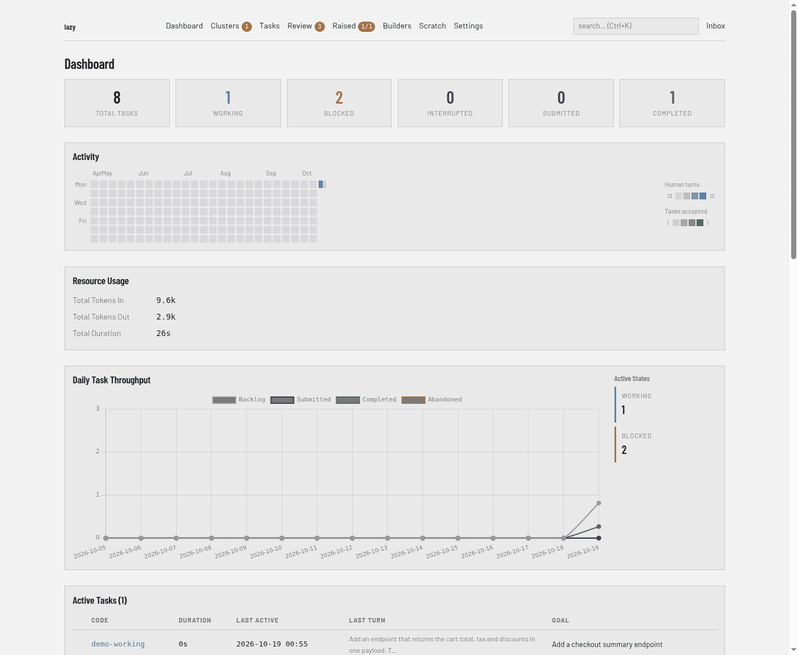

The daemon, the task container and the proxy
flowchart LR CLI[CLI] --> Daemon[Project daemon] Browser[Dashboard or Teams] --> Daemon Agent[Agent in task container] --> MCP[MCP server] MCP --> Daemon Daemon --> Store[(Task store)] Agent --> Proxy[Model proxy] Proxy --> Provider[Model provider]
Lazy is not one program that you run and that exits. Each project has a long-running daemon that owns everything, and every other part of lazy is a client of it. This page explains that split, where an agent actually runs, and how the proxy lets an agent call a model without ever holding your real credential.
Why it exists
Task state is shared by several things at once: the CLI you type into, the dashboard in your browser, agents calling lazy's tools, and background work such as keeping task statuses current. If each of them wrote to the store itself they would race, and a rule implemented in one would drift from the same rule in another. So there is one owner. Rules live in one place, and what you see in the CLI is what the dashboard and the agents see.
The daemon owns state
Each project gets its own daemon process; only one runs per project. It is started for you when a command needs it, and you can manage it directly:
lazy daemon status
lazy daemon logs
lazy daemon restart
The daemon holds the task store, decides what each status change means, launches and watches agents, and does the periodic housekeeping that keeps statuses honest. Everything else is a client that asks it to do things:
- The CLI parses what you type and prints the result.
- The dashboard is served by the daemon itself, on the port and interface
set in the
[server]section oflazy.toml. On a project machine run by Lazy Teams the daemon serves no dashboard of its own, andlazy daemon statusshowsWeb: off (Lazy Teams serves the UI). - The agent's tools (see MCP tools) go through the daemon.
- The supervisor is the small process lazy starts next to an agent to run it, watch it and report back to the daemon.
By default the daemon listens on loopback only, so none of this is reachable
from other machines unless you change [server] bind.
Lazy Teams serves the project UI itself and assigns the daemon's listener. On a single-person install, this config keeps the dashboard on the local machine:
[server]
bind = "127.0.0.1"
port = 26024
The dashboard starts at port 26024 and stays on the loopback interface.
The task container
Each task's agent runs in a Docker container of its own, on a git worktree for that task. The container is where the agent can install packages, run builds and edit files without touching anything else on your machine. Lazy's own binary is mounted in at launch rather than baked into the image. See The agent container for the default image, giving your project its own image, and how lazy protects the worktree's git metadata.
Anything an agent can read it could also leak. That is why credentials are kept out of it.
The proxy and credential injection
All of an agent's model traffic goes through a proxy the daemon runs on your machine. The proxy is always on; the agent is always handed the proxy's address and never talks to the model provider directly.
At launch the daemon gives the agent a placeholder in the environment variable where the real credential would normally go. The placeholder is a random per-task value shaped like the real credential, so the agent's tooling accepts it. When a request arrives, the proxy looks the placeholder up, learns which task and role it belongs to, and swaps in the real credential just before the request leaves your machine.
What that buys you:
- The container's environment, its logs and anything a prompt-injected agent could send out contain only a placeholder, which cannot authenticate to the provider directly. It is still a live token for the proxy until it is revoked; see Just-in-time credential injection.
- A placeholder is revoked when the task ends, and on native Linux Docker it is also tied to its own container's network address (not on Docker Desktop, rootless or remote Docker).
- The proxy knows who is calling from the placeholder, not from anything the agent says about itself, so it can attribute usage and choose the upstream.
Your real credentials stay with the daemon, in your operating system's secure storage; see Credentials for how to set them and Just-in-time credential injection for the full flow, lifetimes and what the proxy will and will not forward.
The proxy is also a place to extend lazy. A project can add a request plugin that sees each outbound request; see Proxy request plugins (plugins from a repository are currently not run).
How it shows up
Dashboard: it is the daemon's own web interface, so it always shows the same state as the CLI. Its home page counts the project's tasks by status:

CLI:
lazy daemon status|logs|restartmanage the daemon.
Limits
- A placeholder protects your real credential, not your repository: the agent can still read and change everything in its worktree.
- Pinning a placeholder to its container only works where the container's gateway is an address of the host itself, that is, native Docker. Docker Desktop, rootless runtimes and remote Docker hosts do not pin.
- A daemon will not start on a
lazy.tomlthat does not load. A running daemon keeps using the last good config if the file breaks later.